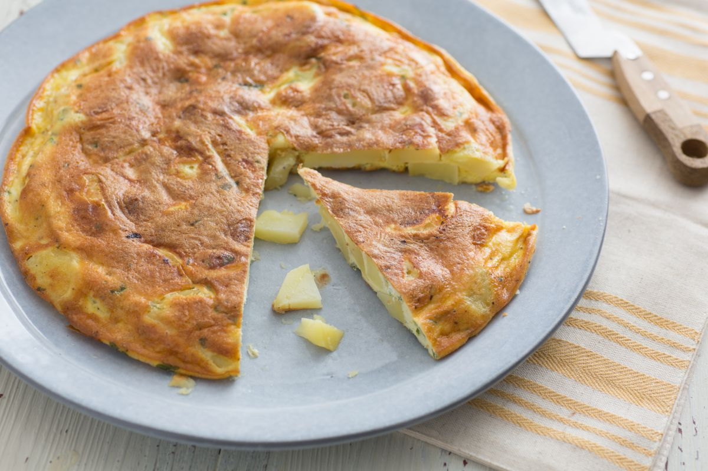

Classic Potato Frittata

Servings: 4 people

Prep Time: 10 minutes

Cook Time: 25 minutes
This classic potato frittata is a versatile and delicious dish that's perfect for breakfast, brunch, or even dinner. It's easy to make and can be customized with your favorite vegetables and cheeses.
Did you know? The potato frittata, a beloved Italian dish, was historically a way to repurpose leftovers. In Italian kitchens, no food was wasted, and the frittata became a perfect vehicle for turning yesterday's dinner into a delicious meal. This versatile dish highlights the Italian ingenuity in creating tasty, sustainable food from humble ingredients!